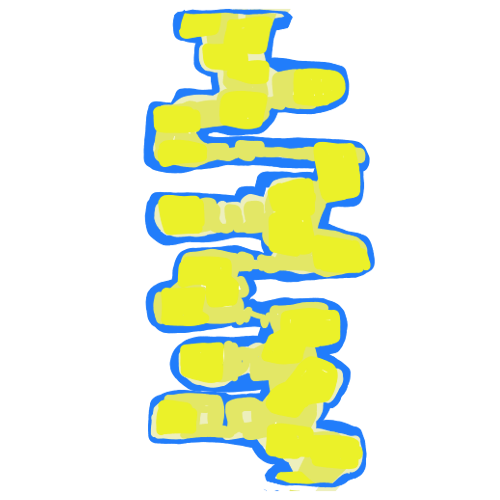
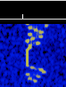
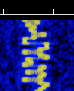
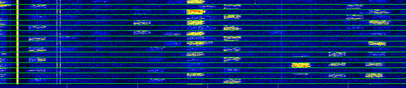

the amateur mode sweeping the nation
FT8 is an extremely popular weak-signal mode used by amateur radio operators. It was developed at Princeton university by K1JT and K9AN, being launched first in 2017. It's popularity has exploded because it is so effective at what it does- propagation is currently at an extreme low, and talking to people from far away can be difficult as a result. Because FT8, and it's associated mode in the WSJT-X library, are so effective at encoding information into a package decodable at -21dB, it can be used in practically any conditions and has the capacity to reach extremely long distances. You can exchange information with people all over the world independent of space weather!
 FT8 transmissions on the waterfall, including an especially strong transmission from ~50 miles away
However, all of this comes at a cost. There is very little "touch" to using FT8- you just click a button to transmit and listen to decode- and only five pieces of information are exchanged during the conversation. Your callsign, your gridsquare, your signal report, a confirmation, and a goodbye. (Also, as an aside- FT8 is a very pretty digital mode!)
An image from within FT8's WSJT-X,
demonstrating the blocks of information transmitted during individual timeframes.
There are many conversations taking place on the same frequency.
technical details
FT8 transmits 77 bits of information per message, with three bits representing the message type and the rest being dedicated to the message data. The mode requires an accurate clock to function, with each transmission being a precise 15 seconds- with so little data being encoded for the sake of readability, error checking is present, but the timing has to be succinct. The mode's developers have published a paper describing the physics behind the mode, but be aware that it expects a lot from the reader.
things I've heard
Because FT8 is so minimal in the information exchanged, I think the most interesting information to share would be the locations of the stations I've recieved.
Canada
OntarioQuebec
United States
ColoradoConnecticut
Florida
Illinois
New York
Oregon
Pennsylvania
Tennessee
Virginia